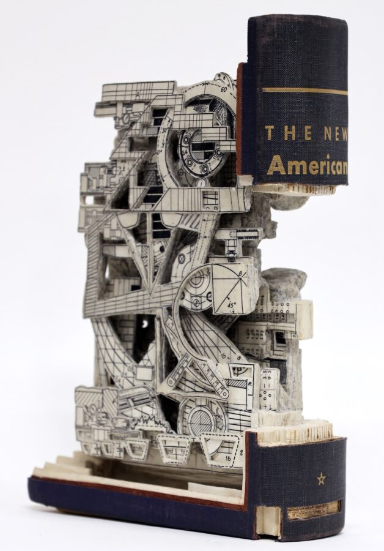

Brian Dettmer: In·Formation: Artist Talk
BRIAN DETTMER | IN·FORMATION Artist Talk
Saturday, January 10, 2026, 2:00 PM
The Riverside Arts Center’s Freeark Gallery is pleased to present In·Formation, an exhibition of Brian Dettmer sculpture curated by Jeremy Black. Please join us for an artist talk will be held Saturday, January 10, 2026 at 2:00 PM. The exhibition will be on view Thursdays, Fridays, and Saturdays 1:00 – 5:00 PM through January 24, 2026.
The Riverside Arts Center is proud to present In·Formation, an exhibition of contemporary works by Riverside based artist Brian Dettmer. Known for his intricate, sculptural approach to repurposing printed media, Dettmer’s works continue his exploration of vintage printed documentation and the manipulation of information that lies within.
Dettmer’s method is profoundly meticulous. Through a series of carefully executed cuts, the artist carves into the pages of books, encyclopedias, atlases, and other printed works, revealing and transforming the printed content into sculptural objects. There is a randomness to what is revealed, followed by the thoughtfulness of what should remain. With each incision, Dettmer strips away layers to expose previously hidden texts and images, often editing the material and assembling it with his own vernacular that suggests new information.
Through his Coronet series, the artist has created works that can be consumed as collage but were created quite differently through the excavation of printed material from a selection of 1950’s printed digest magazines. While the Coronet series incorporates both image and text, Dettmer has also created works strictly using image with a thoughtful triptych excavating a series of art texts on American Impressionism. The entanglement of recognizable portions of famous paintings creates a new work silhouetted by the book itself.
These new works are a pleasure to witness in person; the intricacies of these sculptural pieces beg the viewer to observe at close range. Dettmer’s process is unique, and the work asks important questions of the viewer. I am excited to have curated this exhibition and encourage viewers to personally experience these original works. –Jeremy Black, curator —
Brian Dettmer is one of the leading contemporary artists working with the book today. His work has been the subject of over 25 solo exhibitions over the past 20 years, at International galleries and institutions including the Geiger Foundation, Cecina, Italy, MiTO Galerie, Barcelona, Spain, the Museum of Contemporary Art of Georgia, GA, the International Museum of Surgical Science, IL and the Virginia Museum of Contemporary Art, VA. Dettmer’s work has been featured in shows at the Museum of Arts and Design, NY, The Renwick Gallery at the Smithsonian American Art Museum, DC, The Chicago Cultural Center, The High Museum, GA, NYU AD Space, Abu Dhabi; and the Perez Art Museum, FL among many others.